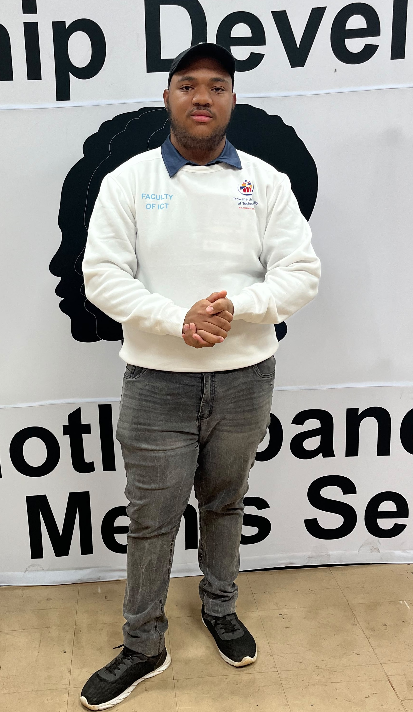

Get to know the person behind the code and the leadership roles.

I am an Informatics student at Tshwane University of Technology with a strong passion for Cloud Computing, Software Development, and Student Leadership.
I enjoy building modern, responsive web applications while creating platforms and opportunities that empower fellow students through mentorship, innovation, and meaningful community engagement.
My journey is driven by a belief that technology and leadership should work together to create real impact — both in digital solutions and in the lives of the people around me.
Nkosingiphile Ceprien Sefodi
sefodiphile0501@gmail.com
South Africa, Gauteng
Informatics & Technology
Every stage of my journey has contributed to the person and professional I am becoming.
Completed my secondary education at Clapham High School, building the academic foundation that would lead me into the technology field.
Completed a learnership in Data Science at NQF Level 5, gaining practical experience in data analysis, machine learning concepts and AI-driven problem solving.
Completed a qualification in Systems Development at NQF Level 4, covering software development fundamentals, systems analysis and practical coding skills.
Advanced systems development training at NQF Level 5, deepening skills in software engineering, development methodologies and building real-world solutions.
Currently studying towards a Diploma in Informatics at TUT, covering information systems, software development, databases and emerging technologies at degree level.
Since joining TUT, stepped into multiple leadership roles — Chairperson of SCCE and the Informatics House Committee, Program and Support Lead for the AWS Student Builder Group, and Peer Facilitator for the Top Junior program (DGLD).
The areas where technology, people and purpose come together for me.
Exploring cloud technologies and developing practical AWS skills.
Building applications and continuously improving my development skills.
Helping students learn, build confidence and discover opportunities.
Contributing to initiatives that create positive impact within communities.
Developing public speaking, facilitation and interpersonal skills.
Exploring new ideas and better ways of solving real problems.
Every experience provides an opportunity to learn and become better.
Taking responsibility and creating opportunities for others to succeed.
Meaningful results are created when people with different perspectives work together.
I want the work I do to have value beyond simply completing a task.
At this stage of my journey, I am focused on strengthening my technical foundation while developing the leadership and professional skills needed for the technology industry.
I am particularly interested in cloud computing, software development, technology communities and opportunities where technology can create meaningful impact.
I'm always interested in connecting with people who are passionate about technology, learning, leadership and creating opportunities for others.
Let's Connect